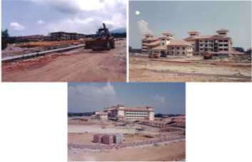
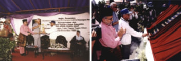
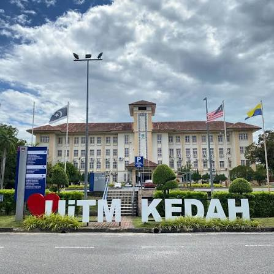
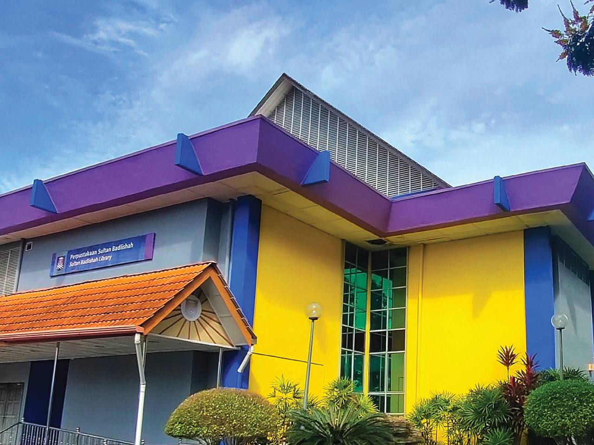
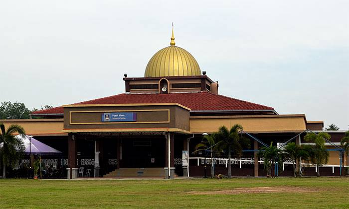
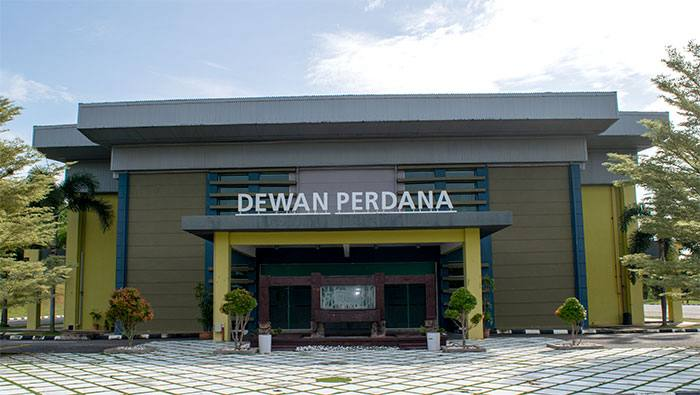
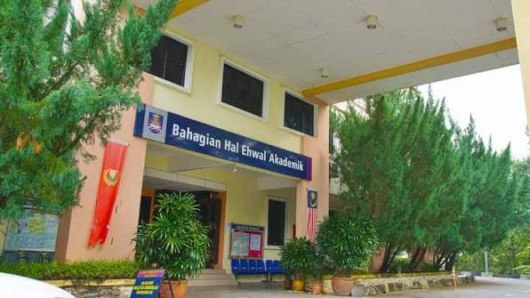
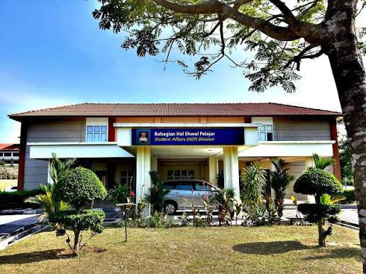

Universiti Teknologi MARA (UiTM) Kedah was established on 3 June 1994 as the 11th branch campus in Kedah.
The campus is located on a 350-acre land in Mukim Bujang, between Semeling and Merbok. It is about 14 kilometers from Sungai Petani.
The development of this campus was approved under the 6th Malaysia Plan with a cost of RM38.4 million.
The campus started operating on 1 October 1997 and can accommodate up to 7,000 students.
It was officially opened on 26 November 1999 by YB Dato’ Paduka Daim Zainuddin, who was the Minister of Finance at that time.
Today, UiTM Kedah continues to provide quality education and helps students to grow in knowledge, skills, and personal development.

Figure 1: Construction of the Merbok Campus which began on 3 June 1994.

Figure 2: The official opening ceremony of UiTM Kedah Branch, Merbok Campus in November 1999.
Besides, the official UiTM song, UiTM Di Hatiku, is used in all UiTM branches including UiTM Kedah. The song represents the spirit of the university community.
It reflects the values of “Usaha, Taqwa, Mulia” and inspires students through its meaningful lyrics. The song encourages the pursuit of knowledge, national development, and service to the country.





